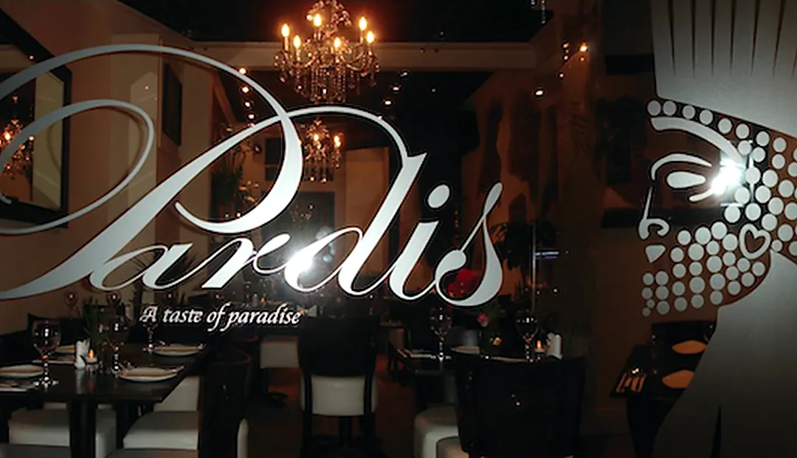
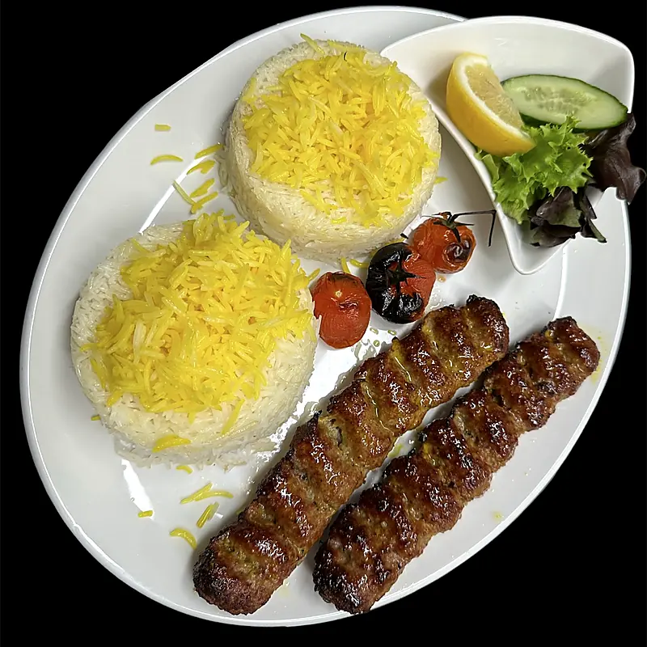
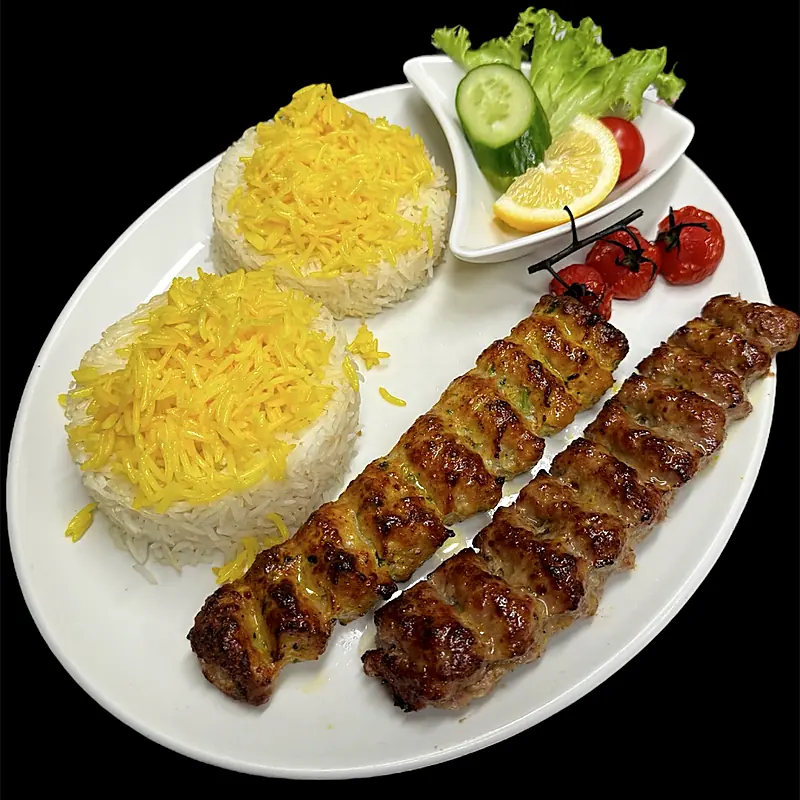
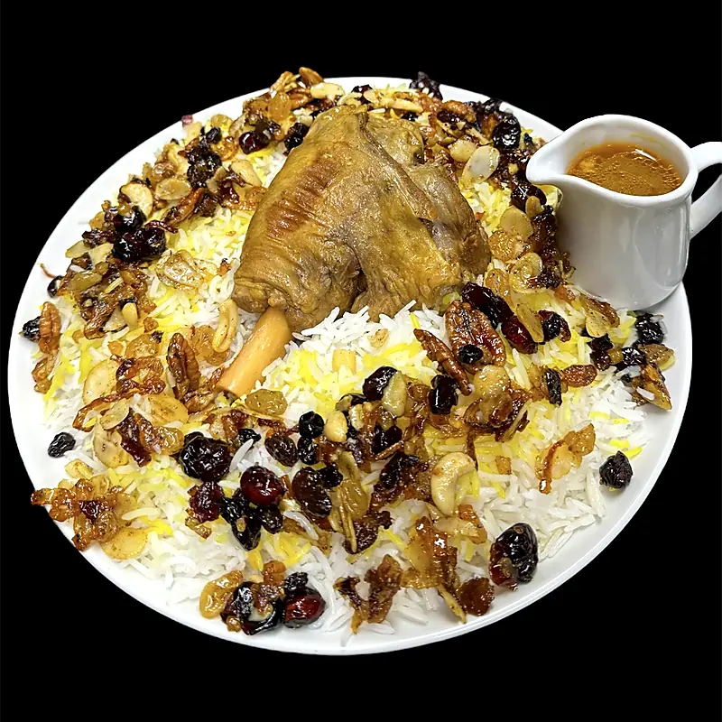
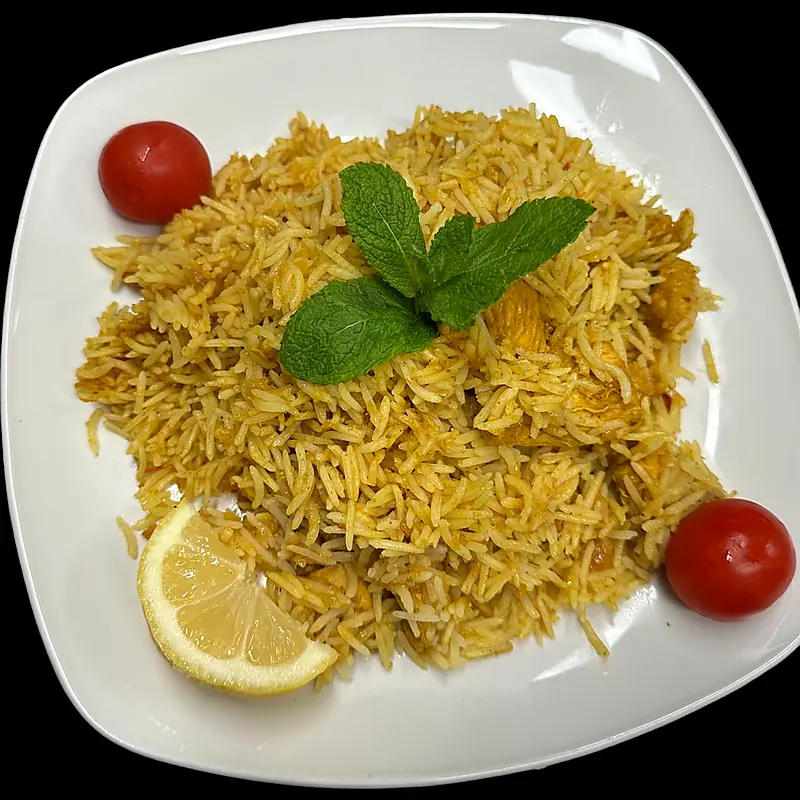
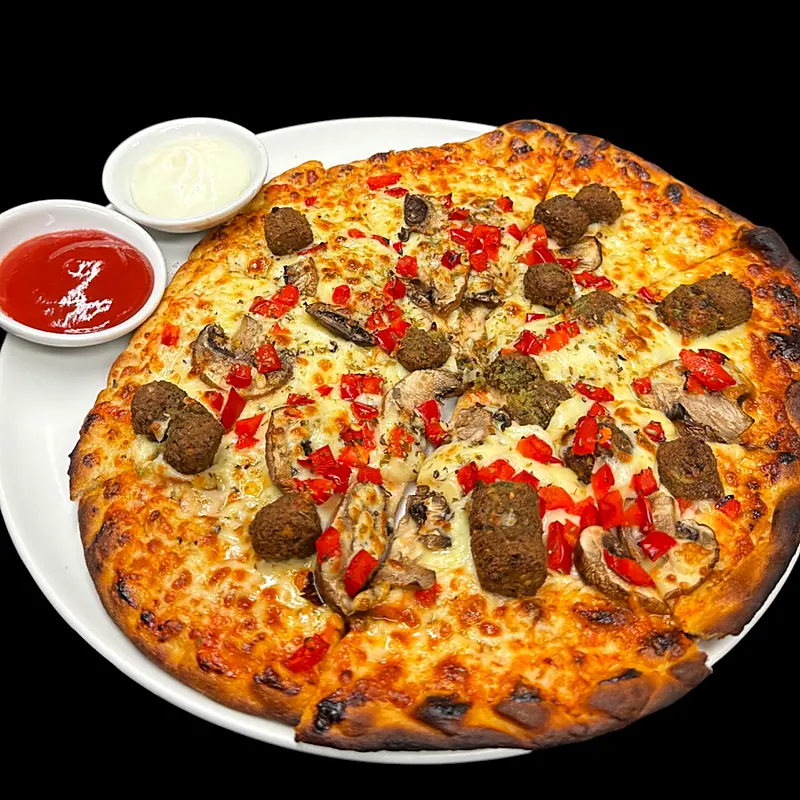
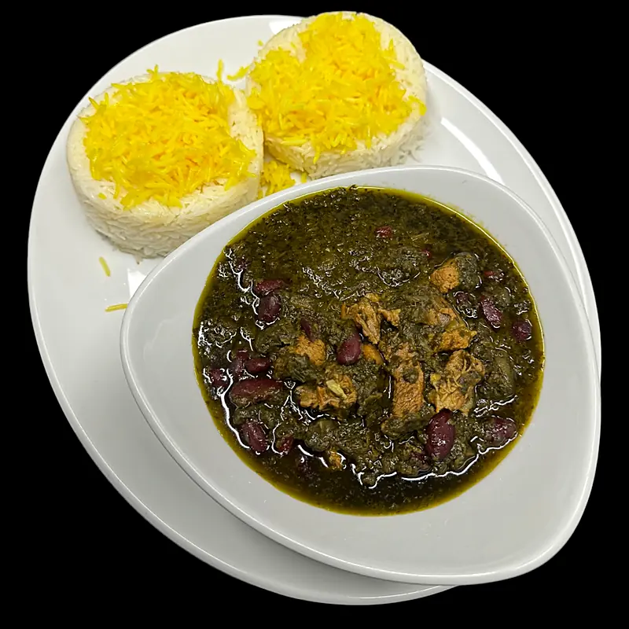

Koobideh
Two skewers of seasoned chicken, lamb or a mix, served with saffron rice.
Connaught Street · London
Family-run cooking, real saffron and charcoal grills—minutes from Hyde Park.

29 Connaught StreetA family table
Pardis is an independent family-run restaurant, bringing a modern Persian rhythm to mezze, grills, stews and rice dishes.
Colour on every plate






Lunch into dinner
Find us on Connaught Street, a short walk from Hyde Park and Marble Arch.
Your table awaits
Book a table for your next meal or ask the family about private dining for birthdays, gatherings and corporate events.
29 Connaught StreetLondon W2 2AY